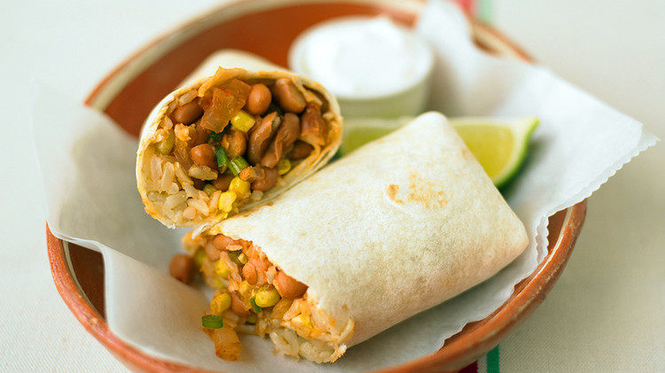

Pinto Bean Wraps

Description
Great as a lunch or dinner, tasty pinto beans and rice wrap.
Ingredients
- 1 can or cup of cooked pinto beans
- 1 cup of basmait rice, rinsed
- 1/2 tsp tumeric
- 1/2 tsp ground cumin
- 1/4 pound mushrooms, chopped
- 1/2 sweet red pepper, chopped
- 1/4 pound celery, finely chopped
- 1 plum tomato, chopped
- 1 medium onion
- 1 tsbp tex mex spice
- 1/2 pound cabbage, chopped
- 2 large carrots, grated
- 1/4 cup vegan mayonnaise
- 1/2 tsp salt
- 1 tsbp olive oil
- Tortilla wraps
Instructions
- In a small saucepan add half the olive oil with heat at medium.
- Add the cumin and the tumeric as the oli starts to bubble, stir-fry
for 30 seconds.
- Add the rice and stir until its coated in the spices.
- Add two cups of water and raise heat to high until the water
starts to boil. Low heat and leave to simmer for 8 minutes.
- Put the rest of the oil in a medium saucepan, add the onions and fry
until the onions are lightly brown.
- Add the mushrooms and sweet red pepper, fry for amother 5 minutes.
Add the tomato and stir-fry in the tex mex spice. Season with salt
for taste
- Add the cabbage, carrots and vegan mayonnaise together in a bowl
add salt for taste
- Heat the Tortilla wraps in the microwave under the grill
- Add rice, beans and sald to the wrap
- Enjoy
Homepage